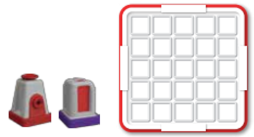

Do It! Laser Maze: Explore Lasers and Distance
 The Challenge
The Challenge
Your challenge is to direct a laser beam using mirrors and beam splitters to light up a target. You will choose challenge cards that tell you which targets to light and the pieces you need. Then you will measure the distances between the laser maze pieces, and create a line plot of the data.
Project Steps
-
Straight Line
-
Mirror
-
Beam Splitter
-
Create a Line Plot
-
Solve Challenge Cards
Straight Line
Laser beams travel in a straight line in one direction. Set up your board using the red laser piece and a purple target. Your goal is to light the purple target. You can change the orientation of all the pieces as you place them on the board.
Next, measure and record distances.

- Record the locations on the grid where you put each piece. You can do this by taking a photograph or writing it down. For example, you could write “the laser is in the 1st column, second row and the target is in the 4th column, second row.”
- Use a ruler to measure the distance between the laser piece and the target.
- Measure to the nearest whole, quarter (¼) , or half (½) inch.
- Measure from the edge of the laser piece that is closest to the target, and the edge of the target that is closest to the laser piece.

Mirror
Lasers cannot change direction without help. Scientists use mirrors to direct laser beams where they want them to go. If a mirror is placed directly in front of a laser, the beam will bounce back to the laser and may cause the laser to break. If the laser is pointed towards a tilted mirror in this kit, the beam will reflect off the mirror at a 90-degree angle. Your challenge is to use the red laser piece, a purple target, and a blue mirror to change the direction of the laser beam to make it light up the target.
Next, measure and record distances.

- Record the locations on the grid where you put each piece through a photograph or writing.
- Use a ruler to measure two distances: the laser piece to the mirror, and the mirror to the target. Your measurements follow the path of the laser beam.
- Measure to the nearest whole, quarter (¼) , or half (½) inch.
- As before, measure from the nearest edge to the nearest edge.
Beam Splitter
A beam-splitter is a tool that takes the laser beam and splits it into two different paths. One path is reflected 90 degrees, while the other path passes straight through. Try to light two purple targets at the same time by using the red laser piece, the green beam splitter and two purple target pieces.
Next, measure and record distances.

- Record the locations on the grid where you put each piece through a photograph or writing.
- Use a ruler to measure three distances. Again, your measurements follow the path of the laser beam. The first beam goes through the beam-splitter. It begins at the laser and ends at the target, so that is the first distance you will measure. The second beam has two measurements. One begins at the laser and ends at the mirror. The second begins at the mirror and ends at the target.
- Measure to the nearest whole, quarter (¼) , or half (½) inch.
- As before, measure from the nearest edge to the nearest edge.
Create a Line Plot
Now, make a line plot of your data. You should have six lengths to plot.
- Start by making a line.
- Start with the lowest whole number in the data set.
- End with the next whole number up from the largest fraction.
- Make a mark between each whole number to show ¼, ½ , and ¾ of an inch.
- Refer to “Make a Line Plot” for an example.
- Place an X above each length. Each X shows one light beam measurement. You should have six X’s on your line plot.
Solve Challenge Cards
Now is your opportunity to solve as many challenge cards as you can. There are 60 challenge cards ordered based on difficulty, and they range from beginner, intermediate, advanced, to expert. Each card has the number of targets and pieces you will need to use on the front of the card and the solution on the back. Start with beginner challenges before advancing to the harder cards. Once you have attempted a few, choose one or two challenge cards that you think were particularly hard to solve. Explain what was difficult about them.
- What did you try initially, and then what did you have to change to solve them?
- What did you learn about lasers from the experience?